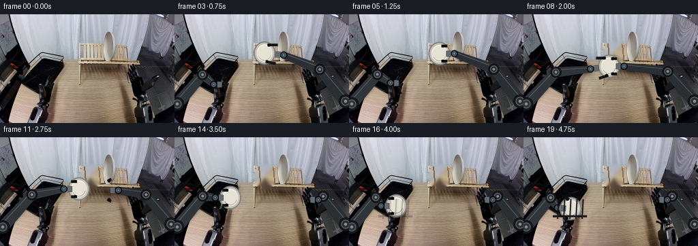
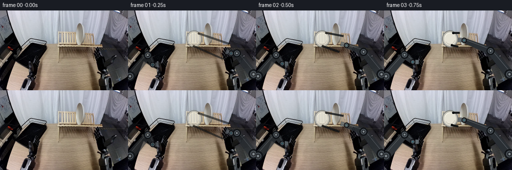

CODING AGENTS AS PIXEL WORLD MODELS
traex/GPT-5.6-Sol · common50_0034
点击播放 · 原生 RGB 像素
逐轮保存的候选
回放视频、检查图与代码变化。
每份候选均可单独播放。实际图片检查记录在下方工具轨迹中。
候选 01播放与检查图
点击播放 · 原生 RGB 像素


展开代码变化
--- 上一保存版本
+++ 本次保存版本
@@ -0,0 +1,306 @@
+from pathlib import Path
+import math
+
+import cv2
+import numpy as np
+from PIL import Image, ImageDraw, ImageFilter
+
+import artifact_io
+
+
+ROOT = Path(__file__).resolve().parent
+W, H = 256, 160
+S = 4 # supersampling for clean small-scale mechanical edges
+
+
+def clamp01(x):
+ return max(0.0, min(1.0, x))
+
+
+def smooth(x):
+ x = clamp01(x)
+ return x * x * (3.0 - 2.0 * x)
+
+
+def span(i, a, b):
+ return smooth((i - a) / float(b - a)) if a != b else float(i >= b)
+
+
+def lerp(a, b, t):
+ return (a[0] + (b[0] - a[0]) * t,
+ a[1] + (b[1] - a[1]) * t)
+
+
+def polyline_path(points, t):
+ """Piecewise path with equally spaced keyframe intervals."""
+ if t <= 0:
+ return points[0]
+ if t >= 1:
+ return points[-1]
+ q = t * (len(points) - 1)
+ k = min(len(points) - 2, int(q))
+ return lerp(points[k], points[k + 1], smooth(q - k))
+
+
+def scpt(p):
+ return tuple(int(round(v * S)) for v in p)
+
+
+def polygon_for_segment(a, b, ra, rb):
+ dx, dy = b[0] - a[0], b[1] - a[1]
+ length = max(1e-5, math.hypot(dx, dy))
+ nx, ny = -dy / length, dx / length
+ return [
+ (a[0] + nx * ra, a[1] + ny * ra),
+ (b[0] + nx * rb, b[1] + ny * rb),
+ (b[0] - nx * rb, b[1] - ny * rb),
+ (a[0] - nx * ra, a[1] - ny * ra),
+ ]
+
+
+def draw_segment(draw, a, b, ra, rb, body, edge, highlight):
+ p = polygon_for_segment(a, b, ra, rb)
+ draw.polygon([scpt(x) for x in p], fill=body, outline=edge)
+ # A restrained metallic highlight down the illuminated upper edge.
+ dx, dy = b[0] - a[0], b[1] - a[1]
+ ln = max(1.0, math.hypot(dx, dy))
+ nx, ny = -dy / ln, dx / ln
+ sign = -1 if ny > 0 else 1
+ offa, offb = ra * 0.45 * sign, rb * 0.45 * sign
+ draw.line([scpt((a[0] + nx * offa, a[1] + ny * offa)),
+ scpt((b[0] + nx * offb, b[1] + ny * offb))],
+ fill=highlight, width=max(1, S))
+
+
+def draw_joint(draw, p, r, body=(45, 50, 56, 255)):
+ x, y = p
+ box = [int((x-r)*S), int((y-r)*S), int((x+r)*S), int((y+r)*S)]
+ draw.ellipse(box, fill=(23, 27, 31, 255), outline=(9, 11, 13, 255), width=S)
+ rr = r * .64
+ box2 = [int((x-rr)*S), int((y-rr)*S), int((x+rr)*S), int((y+rr)*S)]
+ draw.ellipse(box2, fill=body, outline=(100, 109, 116, 255), width=S)
+ rr2 = r * .22
+ draw.ellipse([int((x-rr2)*S), int((y-rr2)*S), int((x+rr2)*S), int((y+rr2)*S)],
+ fill=(132, 140, 144, 255))
+
+
+def arm_geometry(side, wrist):
+ if side == "right":
+ base = (251.0, 128.0)
+ # Fixed-length-looking, upward-bowed industrial linkage.
+ elbow = (215.0 + .10*(wrist[0]-180), 83.0 + .18*(wrist[1]-70))
+ else:
+ base = (4.0, 132.0)
+ elbow = (43.0 + .16*(wrist[0]-70), 87.0 + .16*(wrist[1]-92))
+ return base, elbow, wrist
+
+
+def draw_arm(layer, shadow, side, wrist, visibility=1.0):
+ if visibility <= 0:
+ return
+ base, elbow, tip = arm_geometry(side, wrist)
+ # Soft contact-free cast shadow below the rigid arm.
+ sd = ImageDraw.Draw(shadow)
+ spts = [scpt((base[0]+2, base[1]+4)), scpt((elbow[0]+2, elbow[1]+4)),
+ scpt((tip[0]+2, tip[1]+4))]
+ sd.line(spts, fill=(0, 0, 0, int(72*visibility)), width=10*S, joint="curve")
+
+ d = ImageDraw.Draw(layer)
+ if side == "right":
+ body, edge, hi = (42, 47, 52, int(255*visibility)), (12, 15, 18, int(255*visibility)), (91, 99, 105, int(220*visibility))
+ else:
+ body, edge, hi = (48, 53, 57, int(255*visibility)), (13, 16, 18, int(255*visibility)), (105, 111, 115, int(220*visibility))
+ draw_segment(d, base, elbow, 9.0, 7.2, body, edge, hi)
+ draw_segment(d, elbow, tip, 7.5, 4.8, body, edge, hi)
+ draw_joint(d, base, 10.0, body)
+ draw_joint(d, elbow, 8.0, body)
+ draw_joint(d, tip, 5.3, body)
+ # Small blue status indicator, consistent and firmly attached to the wrist.
+ x, y = tip
+ d.ellipse([int((x-1.4)*S), int((y-1.4)*S), int((x+1.4)*S), int((y+1.4)*S)],
+ fill=(75, 145, 160, int(230*visibility)))
+
+
+def draw_plate(layer, shadow, center, angle=0.0, alpha=255):
+ """Porcelain plate rendered as a shallow round object with a raised rim."""
+ cx, cy = center
+ # It remains close to face-on, so its circular identity is unambiguous.
+ rx, ry = 16.0, 17.2
+ sd = ImageDraw.Draw(shadow)
+ sd.ellipse([int((cx-rx+2)*S), int((cy-ry+3)*S), int((cx+rx+3)*S), int((cy+ry+5)*S)],
+ fill=(0, 0, 0, int(alpha*.30)))
+
+ # Draw into a separate patch so the slight roll at the destination is physical.
+ size = 44*S
+ patch = Image.new("RGBA", (size, size), (0, 0, 0, 0))
+ pd = ImageDraw.Draw(patch)
+ cc = size/2
+ box = [int(cc-rx*S), int(cc-ry*S), int(cc+rx*S), int(cc+ry*S)]
+ pd.ellipse(box, fill=(211, 207, 194, alpha), outline=(126, 128, 125, alpha), width=2*S)
+ inset = 3.0*S
+ pd.ellipse([int(box[0]+inset), int(box[1]+inset), int(box[2]-inset), int(box[3]-inset)],
+ fill=(229, 226, 213, alpha), outline=(181, 180, 171, alpha), width=S)
+ pd.arc([int(box[0]+5*S), int(box[1]+5*S), int(box[2]-5*S), int(box[3]-5*S)],
+ 195, 320, fill=(248, 246, 232, alpha), width=S)
+ pd.arc([int(box[0]+6*S), int(box[1]+6*S), int(box[2]-6*S), int(box[3]-6*S)],
+ 15, 150, fill=(188, 186, 177, int(alpha*.75)), width=S)
+ if abs(angle) > .05:
+ patch = patch.rotate(angle, resample=Image.Resampling.BICUBIC, expand=False)
+ layer.alpha_composite(patch, (int(cx*S-size/2), int(cy*S-size/2)))
+
+
+def draw_gripper(layer, side, plate_center, wrist, openness, alpha=255):
+ """Parallel two-finger gripper wrapping the plate's near rim."""
+ d = ImageDraw.Draw(layer)
+ cx, cy = plate_center
+ wx, wy = wrist
+ dark = (20, 24, 27, alpha)
+ metal = (98, 106, 111, alpha)
+ edge = (8, 10, 12, alpha)
+ # Palm, rigidly connected to the wrist.
+ vx, vy = cx-wx, cy-wy
+ ln = max(1., math.hypot(vx, vy)); ux, uy = vx/ln, vy/ln
+ nx, ny = -uy, ux
+ palm = (wx+ux*5, wy+uy*5)
+ pp = [(palm[0]+nx*4.5, palm[1]+ny*4.5),
+ (palm[0]+ux*7+nx*4.2, palm[1]+uy*7+ny*4.2),
+ (palm[0]+ux*7-nx*4.2, palm[1]+uy*7-ny*4.2),
+ (palm[0]-nx*4.5, palm[1]-ny*4.5)]
+ d.polygon([scpt(p) for p in pp], fill=metal, outline=edge)
+
+ gap = 11.2 + 5.2*openness
+ start_center = (palm[0]+ux*5.5, palm[1]+uy*5.5)
+ # Finger rails lead toward opposite sides of the circular rim.
+ for sg in (-1, 1):
+ a = (start_center[0] + nx*sg*gap, start_center[1] + ny*sg*gap)
+ b = (cx - ux*3 + nx*sg*(11.1 + 2.5*openness),
+ cy - uy*3 + ny*sg*(11.1 + 2.5*openness))
+ d.line([scpt(a), scpt(b)], fill=edge, width=4*S)
+ d.line([scpt(a), scpt(b)], fill=dark, width=2*S)
+ # Rubber jaw pad contacts the plate only in the closed state.
+ pad = (b[0]-ux*2.5, b[1]-uy*2.5)
+ d.ellipse([int((pad[0]-2.2)*S), int((pad[1]-2.2)*S),
+ int((pad[0]+2.2)*S), int((pad[1]+2.2)*S)], fill=(10, 12, 13, alpha))
+
+
+def draw_foreground_rack(frame, amount):
+ """A few fixed black rack tines pass in front of the seated plate."""
+ if amount <= 0:
+ return frame
+ ov = Image.new("RGBA", (W*S, H*S), (0, 0, 0, 0))
+ d = ImageDraw.Draw(ov)
+ a = int(230*amount)
+ # Stable welded tines and a horizontal support rail.
+ for x in (50, 59, 68, 77, 86):
+ d.line([scpt((x, 120)), scpt((x+1.5, 91))], fill=(13, 16, 18, a), width=2*S)
+ d.line([scpt((x+2, 120)), scpt((x+3.5, 92))], fill=(83, 87, 88, int(a*.42)), width=max(1,S//2))
+ d.line([scpt((43, 116)), scpt((93, 116))], fill=(9, 11, 12, a), width=3*S)
+ ov = ov.resize((W, H), Image.Resampling.LANCZOS)
+ return Image.alpha_composite(frame.convert("RGBA"), ov)
+
+
+def generate():
+ source = np.asarray(Image.open(ROOT / "first_frame.png").convert("RGB"), dtype=np.uint8)
+
+ # Remove only the plate-sized source region after pickup. OpenCV's local
+ # inpaint reconstructs the fixed wall/rack texture from immediate neighbors.
+ mask = np.zeros((H, W), np.uint8)
+ cv2.ellipse(mask, (132, 57), (17, 19), 0, 0, 360, 255, -1)
+ clean = cv2.inpaint(source, mask, 4, cv2.INPAINT_TELEA)
+ # Restore two slim wooden holder rails that naturally continue behind it.
+ clean_pil = Image.fromarray(clean)
+ cd = ImageDraw.Draw(clean_pil)
+ cd.line([(123, 43), (126, 76)], fill=(126, 105, 83), width=2)
+ cd.line([(144, 43), (147, 75)], fill=(135, 112, 86), width=2)
+ clean = np.asarray(clean_pil)
+
+ frames = [source.copy()]
+ plate_start = (132.0, 57.0)
+ handoff = (124.0, 78.0)
+ destination = (69.0, 101.0)
+
+ for i in range(1, 20):
+ # Plate motion and ownership.
+ if i <= 4:
+ plate = plate_start
+ elif i <= 9:
+ plate = polyline_path([plate_start, (137, 65), handoff], span(i, 4, 9))
+ elif i <= 16:
+ plate = polyline_path([handoff, (111, 75), (89, 82), destination], span(i, 9, 16))
+ else:
+ plate = lerp(destination, (69.0, 105.0), span(i, 16, 18))
+
+ # Crossfade only the small vacated source patch during lift.
+ bg = source.copy()
+ vacate = span(i, 4, 7)
+ if vacate > 0:
+ a = (mask.astype(np.float32)/255.0 * vacate)[..., None]
+ bg = np.clip(bg*(1-a) + clean*a, 0, 255).astype(np.uint8)
+ base = Image.fromarray(bg).convert("RGBA")
+
+ layer = Image.new("RGBA", (W*S, H*S), (0, 0, 0, 0))
+ shadow = Image.new("RGBA", (W*S, H*S), (0, 0, 0, 0))
+
+ # Right wrist: rest -> source -> handoff -> safe withdrawal.
+ if i <= 4:
+ rw = polyline_path([(214, 91), (181, 70), (154, 57)], span(i, 0, 4))
+ elif i <= 9:
+ rw = (plate[0] + 22, plate[1])
+ else:
+ rw = polyline_path([(146, 78), (181, 78), (211, 92)], span(i, 9, 14))
+
+ # Left wrist waits, reaches the handoff, then carries the plate to rack.
+ if i <= 5:
+ lw = polyline_path([(49, 109), (61, 101)], span(i, 0, 5))
+ elif i <= 9:
+ lw = polyline_path([(61, 101), (86, 89), (102, 78)], span(i, 5, 9))
+ elif i <= 18:
+ lw = (plate[0] - 22, plate[1])
+ else:
+ lw = (50, 104)
+
+ # The arms exist in the source scene; gradual first-frame introduction
+ # avoids an abrupt overlay while preserving frame 00 exactly.
+ vis = .62 + .38*span(i, 1, 3)
+ draw_arm(layer, shadow, "right", rw, vis)
+ draw_arm(layer, shadow, "left", lw, vis)
+
+ # Shadows lie beneath plate and grippers.
+ shadow = shadow.filter(ImageFilter.GaussianBlur(2.3*S))
+ shadow = shadow.resize((W, H), Image.Resampling.LANCZOS)
+ comp = Image.alpha_composite(base, shadow)
+
+ # Plate is newly emphasized gently while still sitting in the holder.
+ plate_alpha = int(175 + 80*span(i, 1, 3))
+ angle = 0 if i < 12 else -6.0*span(i, 12, 18)
+ draw_plate(layer, Image.new("RGBA", layer.size, (0,0,0,0)), plate, angle, plate_alpha)
+
+ # Gripper state: right closes at frame 4 and opens at handoff; left does the reverse.
+ right_open = 1.0 - span(i, 2, 4)
+ if i >= 9:
+ right_open = span(i, 9, 11)
+ draw_gripper(layer, "right", plate if i <= 10 else (rw[0]-19, rw[1]), rw, right_open, int(255*vis))
+
+ left_open = 1.0
+ if i >= 7:
+ left_open = 1.0 - span(i, 7, 10)
+ if i >= 17:
+ left_open = span(i, 17, 19)
+ draw_gripper(layer, "left", plate if i >= 7 else (lw[0]+19, lw[1]), lw, left_open, int(255*vis))
+
+ layer = layer.resize((W, H), Image.Resampling.LANCZOS)
+ comp = Image.alpha_composite(comp, layer)
+ # Rack occlusion becomes visible only as the plate is lowered into it.
+ comp = draw_foreground_rack(comp, span(i, 15, 18))
+ frames.append(np.asarray(comp.convert("RGB"), dtype=np.uint8))
+
+ frames = np.stack(frames, axis=0)
+ # Contract-critical identity assertion.
+ assert np.array_equal(frames[0], source)
+ return frames
+
+
+if __name__ == "__main__":
+ result = generate()
+ artifact_io.save(result, ROOT)
+ print(f"saved {result.shape} {result.dtype}; frame00 exact={np.array_equal(result[0], np.asarray(Image.open(ROOT/'first_frame.png').convert('RGB')))}")
可观测工具轨迹
实际执行的命令与返回图片。
命令 1exit 0
/bin/bash -lc "cat GENERATION_RULES.md && printf '\\n--- PROMPT ---\\n' && cat prompt.txt"
命令 2exit 127
/bin/bash -lc "find . -maxdepth 2 -type f -printf '%p\\n' | sort && file first_frame.png && python3 - <<'PY'
from PIL import Image
im=Image.open('first_frame.png')
print(im.mode, im.size)
print('extrema', im.getextrema())
PY"命令 3exit 0
/bin/bash -lc "cat task_spec.json && printf '\\n--- artifact_io.py ---\\n' && sed -n '1,260p' artifact_io.py"
命令 4exit 0
/bin/bash -lc "python3 - <<'PY'
from PIL import Image
import numpy as np
im=np.array(Image.open('first_frame.png').convert('RGB'))
print(im.shape, im.dtype, im.min(), im.max())
for y in range(0,160,10):
print(y, [tuple(im[y,x]) for x in range(0,256,16)])
PY"命令 5exit 0
/bin/bash -lc "python3 - <<'PY'
from PIL import Image
import numpy as np
im=np.array(Image.open('first_frame.png').convert('RGB'))
# 4x4 averages -> classify basic luminance/chroma
for y in range(0,160,4):
s=''
for x in range(0,256,4):
p=im[y:y+4,x:x+4].mean((0,1)); r,g,b=p; v=p.mean(); mx=p.max(); mn=p.min()
if v<18:c='@'
elif v<35:c='#'
elif v<55:c='O'
elif v<75:c='o'
elif v<100:c=':'
elif v<125:c='.'
elif r>g*1.12 and r>b*1.18:c='W' # warm
elif r>b*1.12 and g>b*1.05:c='w'
elif b>r*1.12:c='C'
elif v<150:c=','
elif v<180:c='-'
elif v<205:c='+'
elif v<225:c='*'
else:c=' '
s+=c
print(f'{y:03d} {s}')
PY"命令 6exit 0
/bin/bash -lc "python3 - <<'PY'
import cv2, numpy as np
im=cv2.imread('first_frame.png')
g=cv2.cvtColor(im,cv2.COLOR_BGR2GRAY)
for params in [(1.2,20,10,60),(1,12,6,40)]:
cs=cv2.HoughCircles(g,cv2.HOUGH_GRADIENT,dp=params[0],minDist=params[1],param1=80,param2=params[2],minRadius=params[2]//2,maxRadius=params[3])
print(params, None if cs is None else np.round(cs[0],1))
# contours by light neutral y>35
rgb=im[:,:,::-1]; mx=rgb.max(2); mn=rgb.min(2); avg=rgb.mean(2)
for th in [120,140,160,180,200,220]:
m=((avg>th)&((mx-mn)<40)&(np.indices(avg.shape)[0]>35)).astype('uint8')*255
n, lab, st, cent=cv2.connectedComponentsWithStats(m)
a=[]
for i in range(1,n):
x,y,w,h,area=st[i]
if area>20:a.append((area,x,y,w,h,tuple(np.round(cent[i],1))))
print('TH',th,sorted(a,reverse=True)[:15])
PY"命令 7exit 0
/bin/bash -lc "python3 - <<'PY'
from PIL import Image
import numpy as np
im=np.array(Image.open('first_frame.png').convert('RGB'))
chars='@#8&o:*. '
# grayscale ascii 2x2 starting y35
for y in range(32,160,2):
s=''
for x in range(0,256,2):
p=im[y:y+2,x:x+2].mean((0,1)); lum=.2126*p[0]+.7152*p[1]+.0722*p[2]
s+=chars[min(8,int(lum)//29)]
print(f'{y:03d}'+s)
PY"命令 8exit 0
/bin/bash -lc "python3 - <<'PY'
from PIL import Image
import numpy as np
im=np.array(Image.open('first_frame.png').convert('RGB'))
# print masks for selected crops at native chars, thresholds/classes
for box in [(30,45,105,95),(135,40,205,100),(0,55,95,125),(185,45,256,125)]:
x0,y0,x1,y1=box; print('\\nBOX',box)
for y in range(y0,y1):
s=''
for x in range(x0,x1):
r,g,b=map(int,im[y,x]); v=(r+g+b)/3; spread=max(r,g,b)-min(r,g,b)
if v<20:c='@'
elif v<45:c='#'
elif v<80:c='o'
elif v<110:c='.'
elif v>175 and spread<35:c='X'
elif v>145 and spread<45:c='x'
elif r-b>35:c='w'
elif r-b>18:c='v'
elif b-r>18:c='c'
else:c='-'
s+=c
print(s)
PY"命令 9exit 0
/bin/bash -lc "python3 - <<'PY'
from PIL import Image
import numpy as np
A=np.array(Image.open('first_frame.png').convert('RGB'))
for y in range(40,121,2):
m=(A[y].mean(1)>145)&((A[y].max(1)-A[y].min(1))<48)
# runs >=2 below
ids=np.where(m)[0]; runs=[]
if len(ids):
z=np.r_[0,np.where(np.diff(ids)>1)[0]+1,len(ids)]
for a,b in zip(z[:-1],z[1:]):
if b-a>=2:runs.append((ids[a],ids[b-1]))
print(y,runs)
PY"命令 10exit 0
/bin/bash -lc "python3 - <<'PY'
import cv2,numpy as np
A=cv2.imread('first_frame.png')[:,:,::-1]; v=A.mean(2)
for th in (20,35,50,70,90):
m=(v<th).astype('uint8');n,l,st,c=cv2.connectedComponentsWithStats(m)
q=[]
for i in range(1,n):
x,y,w,h,a=st[i]
if a>50:q.append((a,x,y,w,h,tuple(np.round(c[i],1))))
print('\\nTH',th);print(*sorted(q,reverse=True)[:30],sep='\\n')
PY"命令 11exit 0
/bin/bash -lc "python3 - <<'PY'
from PIL import Image
import numpy as np
A=np.array(Image.open('first_frame.png').convert('RGB'))
for y in [40,48,56,64,72,80,88,96,104,112,120,128,136,144]:
print('\\ny=',y)
for x in range(0,256,8):
r,g,b=map(int,A[y,x]); print(f'{x:3}:{r:03},{g:03},{b:03}',end=' ')
print()
PY"命令 12exit 0
/bin/bash -lc "python3 - <<'PY'
import cv2, numpy as np
im=cv2.imread('first_frame.png'); g=cv2.cvtColor(im,cv2.COLOR_BGR2GRAY);e=cv2.Canny(g,50,120)
ys,xs=np.where(e)
# score circumferences candidates region
best=[]
for cy in range(35,81):
for cx in range(70,191):
for r in range(12,41):
aa=np.linspace(0,2*np.pi,200,endpoint=False); xx=np.rint(cx+r*np.cos(aa)).astype(int); yy=np.rint(cy+r*np.sin(aa)).astype(int)
ok=(xx>=0)&(xx<256)&(yy>=0)&(yy<160); sc=e[yy[ok],xx[ok]].mean()/255
if sc>.17:best.append((round(sc,3),cx,cy,r))
print(sorted(best,reverse=True)[:50])
PY"命令 13exit 0
/bin/bash -lc "python3 - <<'PY'
import cv2,numpy as np
A=cv2.imread('first_frame.png')[:,:,::-1].astype(float)
g=cv2.cvtColor(A.astype('uint8'),cv2.COLOR_RGB2GRAY).astype(float)
# For circle candidates in workspace y50:140, score low saturation, smooth, boundary edge
edge=cv2.Canny(g.astype('uint8'),40,100)/255.
for r in [12,15,18,22,26,30,35]:
vals=[]
yy,xx=np.mgrid[-r:r+1,-r:r+1]; inn=xx*xx+yy*yy<(.8*r)**2; ring=((xx*xx+yy*yy)>(.82*r)**2)&((xx*xx+yy*yy)<(1.08*r)**2)
for cy in range(45+r,145-r,2):
for cx in range(5+r,251-r,2):
p=A[cy-r:cy+r+1,cx-r:cx+r+1]; gg=g[cy-r:cy+r+1,cx-r:cx+r+1]; ee=edge[cy-r:cy+r+1,cx-r:cx+r+1]
sat=(p.max(2)-p.min(2))[inn].mean(); mean=gg[inn].mean(); std=gg[inn].std(); ed=ee[ring].mean();
score=mean/255 - sat/100 - std/150 + ed*.8
vals.append((score,cx,cy,r,round(mean,1),round(sat,1),round(std,1),round(ed,2)))
print('\\nr',r);print(*sorted(vals,reverse=True)[:10],sep='\\n')
PY"命令 14exit 0
/bin/bash -lc 'python3 generate.py'
命令 15exit 0
/bin/bash -lc 'ls -lh pixels.npz index.html inspection.png transition_check.png frames/*.png | tail -25'
命令 16exit 0
/bin/bash -lc "python3 - <<'PY'
from PIL import Image
import numpy as np
A=np.load('pixels.npz')['pixels']
print('npz',A.shape,A.dtype)
F=np.stack([np.asarray(Image.open(f'frames/{i:02}.png').convert('RGB')) for i in range(20)])
print('frames',F.shape,F.dtype,'exact0',np.array_equal(F[0],np.asarray(Image.open('first_frame.png').convert('RGB'))))
for i in range(20):
if i==0: continue
d=np.abs(F[i].astype(int)-F[i-1].astype(int))
print(i,'changed',np.any(d,2).sum(),'mean',round(d.mean(),2),'max',d.max())
PY"命令 17exit 0
/bin/bash -lc "sha256sum first_frame.png frames/00.png generate.py pixels.npz index.html && find frames -maxdepth 1 -name '*.png' | wc -l"
命令 18exit 0
/bin/bash -lc "python3 -m py_compile generate.py artifact_io.py && python3 - <<'PY'
from pathlib import Path
from PIL import Image
import numpy as np, json
spec=json.loads(Path('task_spec.json').read_text())
F=np.stack([np.asarray(Image.open(f'frames/{i:02d}.png').convert('RGB')) for i in range(spec['frames'])])
assert F.shape==(20,160,256,3) and F.dtype==np.uint8
src=np.asarray(Image.open('first_frame.png').convert('RGB'))
assert np.array_equal(F[0],src)
P=np.load('pixels.npz')['pixels']
assert P.shape==(160,256,20)
for i in range(20):
v=P[:,:,i]
u=np.stack([(v>>16)&255,(v>>8)&255,v&255],2).astype(np.uint8)
assert np.array_equal(u,F[i]), i
assert all(np.any(F[i]"'!=F[i-1]) for i in range(1,20))
print('"'PASS contract + packed RGB integrity + motion')
print('mean temporal abs delta:',float(np.abs(np.diff(F.astype(np.int16),axis=0)).mean()))
PY"保存候选 1 份；完成命令 18 次；可验证图片返回 0 张。原始 API 响应与完整日志保留在本地。